Exercise 1 — Creating a Sales Order in SAP from a Salesforce Opportunity
In this exercise you will build a Boomi integration process that reads a closed Salesforce opportunity (in XML format) and creates a corresponding Sales Order in SAP S/4HANA using the BAPI BAPI_SALESORDER_CREATEFROMDAT2.
- How to use the Boomi for SAP connector to call BAPIs
- How to map Salesforce opportunity fields to SAP Sales Order fields
- How to use Numeric functions for line-item numbering
- How to validate field-length constraints in a Boomi profile
Architecture
The process you will configure follows this flow:
- Message Shape — contains a sample Salesforce XML opportunity payload
- Map Shape — transforms the SF XML to the SAP BAPI request format
- Boomi for SAP Shape — invokes
BAPI_SALESORDER_CREATEFROMDAT2on SAP - Message Shape — displays the resulting Sales Document number
Login & Copy the Sample Process
-
1
Log in to the Boomi AtomSphere SC Customer Training account using the credentials below.
Credentials
UserProvided by trainerPasswordProvided by trainer
Boomi AtomSphere login screen -
2
In the Trainer folder, locate the sample process named Create SO SFDC to SAP Sample. Right-click the process and select Copy to folder, choosing your USERXX folder as the destination.
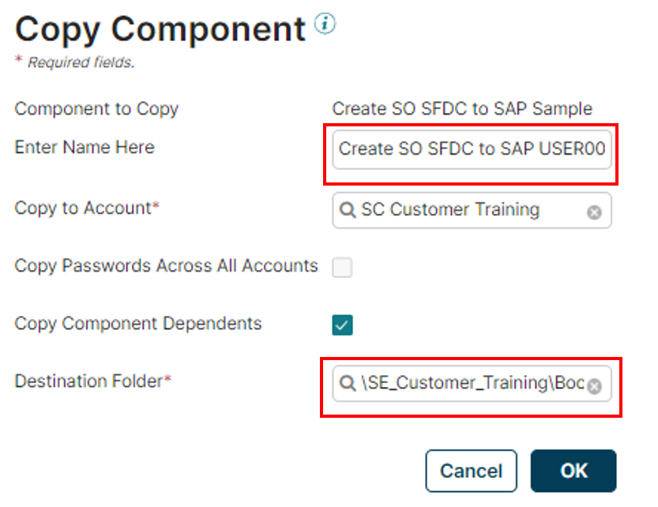
Copy process to USERXX folder -
3
Navigate to your USERXX folder. Double-click the copied process (Create SO SFDC to SAP USERXX) to open it on the canvas.

Process opened on canvas
Review the Process & Inspect the Message Shape
The canvas now shows the pre-built process skeleton. You will configure each shape in the steps that follow.
-
4
Familiarize yourself with the shapes on the canvas. The process contains:
- SFDC Opportunity — a Message shape with sample SF XML
- Map — transforms SF XML → SAP BAPI request
- Boomi for SAP — calls the SAP BAPI
- Display Sales Document — outputs the SAP document number

Process canvas showing shapes -
5
Click on the SFDC Opportunity Message shape to inspect it. You will see a pre-loaded XML payload representing a Salesforce closed opportunity. Do not change this message — it is used as test input.
Configure the Boomi for SAP Shape
-
6
On the canvas, find the Boomi for SAP shape and click Configure.

Boomi for SAP shape on canvas -
7
In the connector configuration, select SAP S4 Connection from the drop-down menu. Ensure the Action is set to
FUNCTION.
Select SAP S4 Connection -
8
Configure a new operation by clicking the + icon next to the Operation field.

Add new operation -
9
On the New Operation screen, enter a name (e.g.,
Create SO USERXX) and click Import.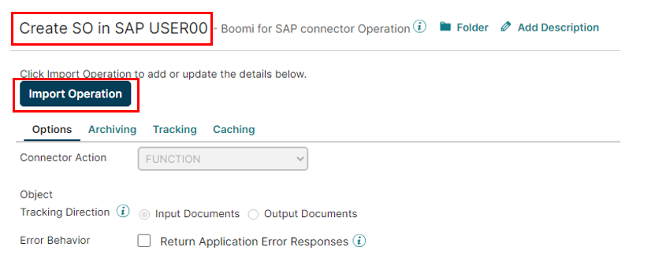
Name the operation -
10
In the Import Wizard, verify all fields are populated and click Next.
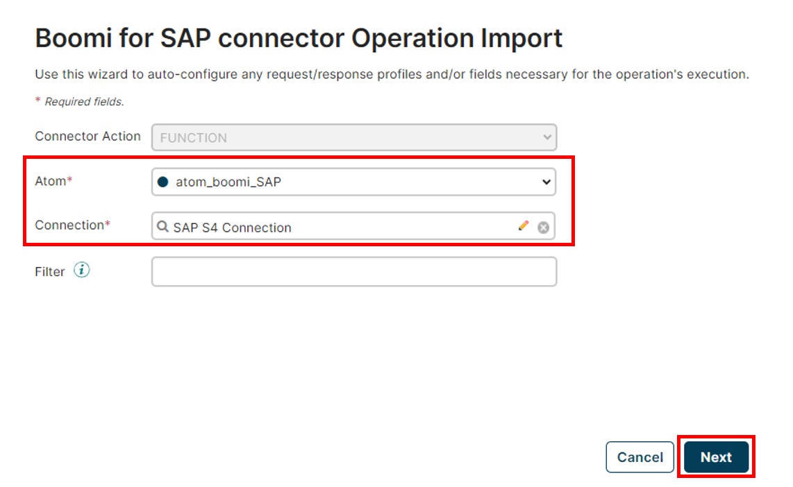
Import Wizard — first screen -
11
Select BAPI_SALESORDER_CREATEFROMDAT2 from the function drop-down and click Next.
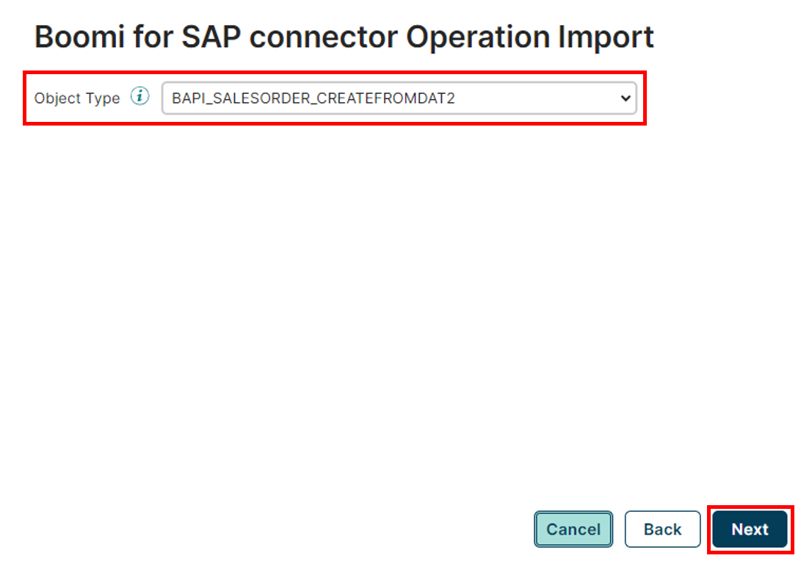
Select BAPI function -
12
Once the profile has been generated, click Finish.

Profile generated — click Finish -
13
Click the pencil icon next to the Request Profile. In the profile editor, locate
ITM_NUMBERunder both T_ORDER_ITEMS_IN and T_ORDER_SCHEDULES_IN, and ensure the Field Length Validation checkbox is UNCHECKED for both.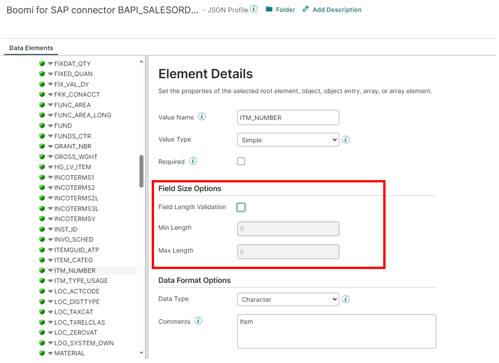
Uncheck Field Length Validation for ITM_NUMBER ImportantIf you skip this step, the process will fail at runtime due to numeric field length constraints. -
14
Click Save and Close on the operation screen.

Save and Close operation -
15
Click OK to finish configuring the Boomi for SAP shape and return to the canvas.
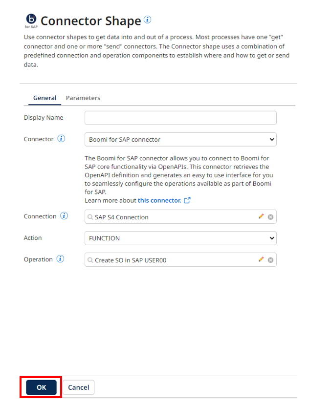
Return to canvas
Copy the SF XML Profile & Map Function
Before configuring the Map shape, you need to copy two assets from the Trainer folder into your USERXX folder.
-
16
In the Trainer folder, find the SF XML profile (e.g., SF Opp XML Profile). Right-click and copy it to your USERXX folder.
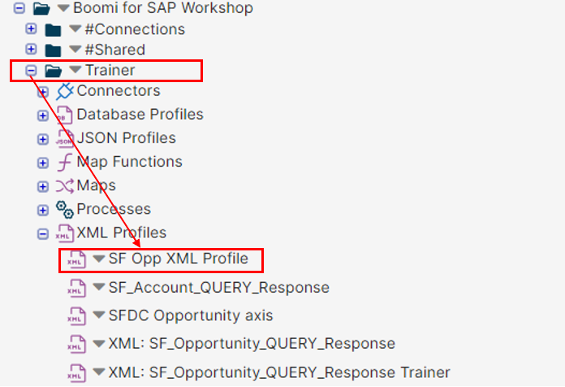
Copy SF XML profile -
17
Give the profile a new name that includes your username (e.g., SF Opp XML Profile USERXX) and confirm your folder selection, then click Copy.

Name the copied profile -
18
Also copy the Map Function named Add Leading Zeros to SAP Customer ID from the Trainer folder to your USERXX folder.
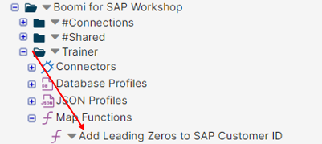
Copy Map Function — Add Leading Zeros 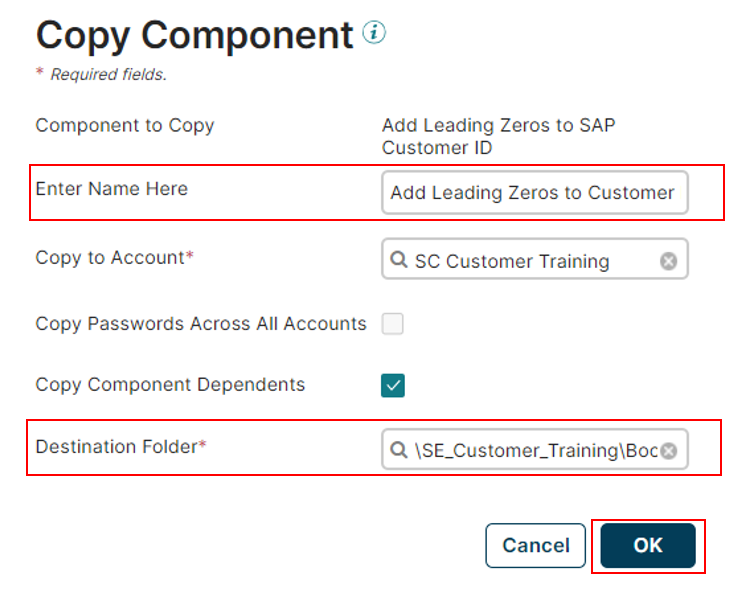
Map Function copied to USERXX folder
Configure the Map Shape
-
19
On the canvas, click the Map shape to configure it.
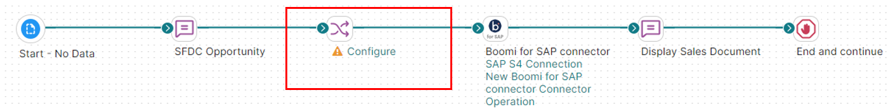
Map shape on canvas -
20
Inside the Map shape, click + to create a new map.

Create new map -
21
Give your map a name (e.g., SF to SAP SO Map USERXX). In the Source panel, drag and drop your SF Opp XML Profile USERXX. In the Destination panel, drag and drop the Boomi for SAP BAPI_SALESORDER_CREATEFROMDAT2 FUNCTION Request profile.
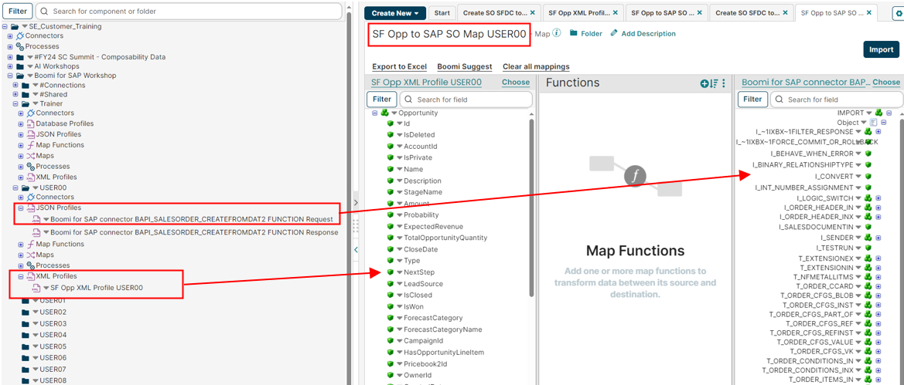
Assign source and destination profiles -
22
Map these three fields by dragging a line from source to destination:
Source Element Destination Element Opportunity → Id I_ORDER_HEADER_IN → PURCH_NO_C Opportunity → OpportunityLineItems → OpportunityLineItem → Quantity T_ORDER_SCHEDULES_IN → REQ_QTY Opportunity → OpportunityLineItems → OpportunityLineItem → PricebookEntry → ProductCode T_ORDER_ITEMS_IN → MATERIAL -
23
Set the following default values in the map destination profile:
Field Default Value I_IXBX_FORCE_COMMIT_OR_ROLLBACK XI_ORDER_HEADER_IN → DISTR_CHAN 10I_ORDER_HEADER_IN → DIVISION 00I_ORDER_HEADER_IN → SALES_ORG 1710I_ORDER_HEADER_IN → DOC_TYPE SOT_ORDER_PARTNERS → PARTN_ROLE AG
Add Functions: Line Item Increment & Leading Zeros
-
24
Still inside the map, click Add Function. From the drop-down, choose Numeric and select Line Item Increment.

Add Numeric function 
Choose Line Item Increment -
25
Configure the defaults for the Line Item Increment function using these values:
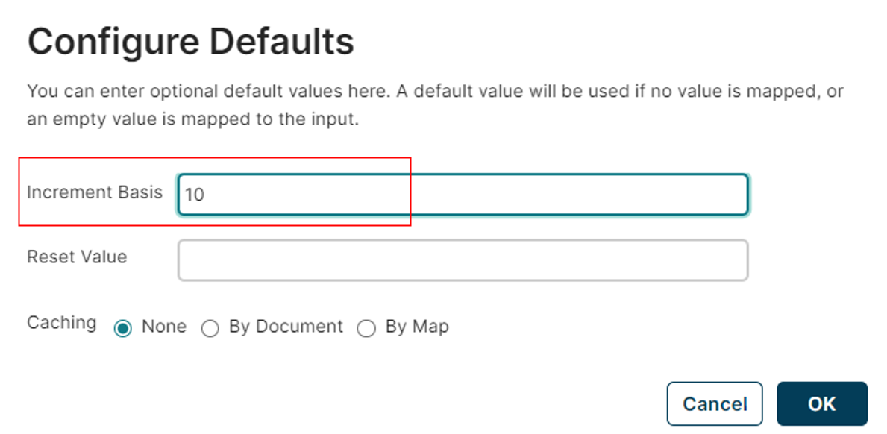
Configure Line Item Increment defaults -
26
Map the field PricebookEntryID (path:
Opportunity → OpportunityLineItems → OpportunityLineItem → PricebookEntryID) to the input of the Line Item Increment function. -
27
Map the function's output to ITM_NUMBER in both
T_ORDER_ITEMS_INandT_ORDER_SCHEDULES_IN. -
28
Drag and drop the Add Leading Zeros to SAP Customer ID map function (copied earlier) onto the map canvas.

Add Leading Zeros function on map -
29
Map the result of the Add Leading Zeros function to the field T_ORDER_PARTNERS → PARTN_NUMB. Then click Save and Close.

Map leading zeros result to PARTN_NUMB -
30
Click OK to return to the canvas.
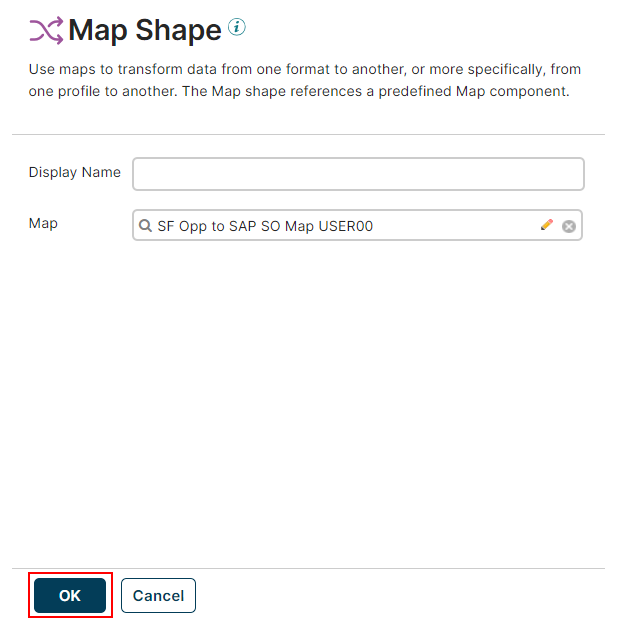
Return to canvas
Configure the Display Sales Document Message Shape
-
31
On the canvas, click the Display Sales Document Message shape to configure it.
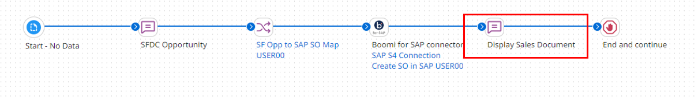
Select Display Sales Document shape -
32
Click the + icon in the Message Shape configuration window to add a dynamic field.
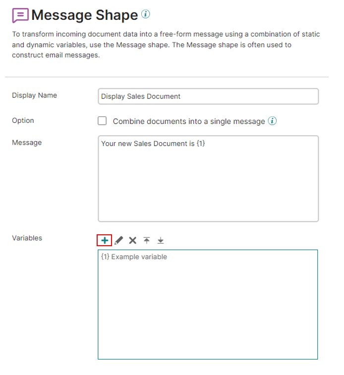
Add field to message shape -
33
On the Parameter Value screen, fill in the following settings:
Field Default Value Type Profile ElementProfile Type JSONProfile Boomi for SAP BAPI_SALESORDER_CREATEFROMDAT2 FUNCTION ResponseElement E_SALESDOCUMENT
Parameter value configuration -
34
Click OK and then Save the process.
Save, Test & Verify
-
35
Save the process by clicking the Save button on the canvas toolbar, then click Test.
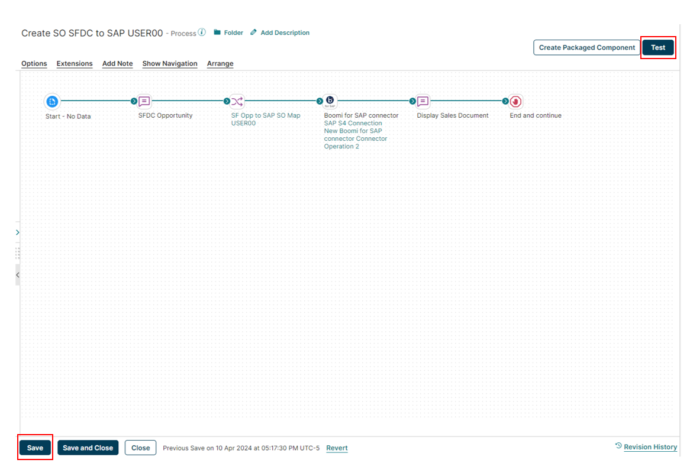
Save and Test the process -
36
In the test panel, select the appropriate Atom and start the test run. After execution completes, open the process logs.
-
37
In the logs, locate the output of the Display Sales Document shape. You should see a 10-digit SAP Sales Document number confirming the Sales Order was successfully created.
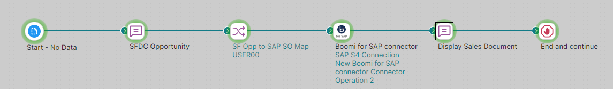
SAP Sales Document number in logs Success!If you see a Sales Document number (e.g.,0000007220), the exercise is complete. If you see an error, double-check the default values and the Field Length Validation setting on ITM_NUMBER.